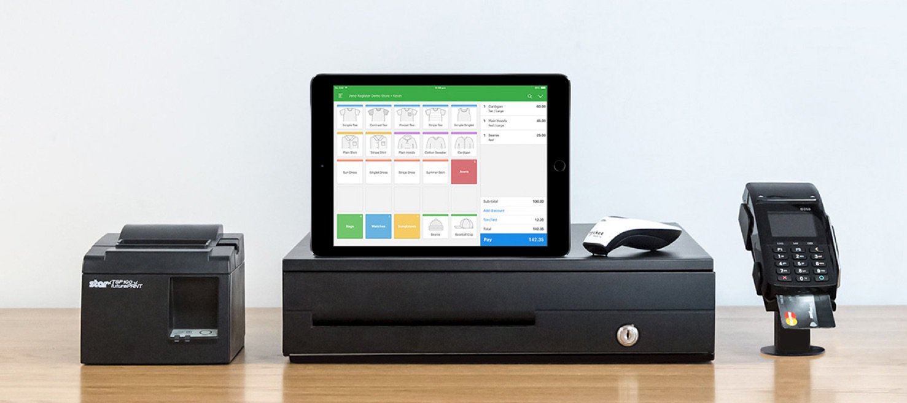

This is part of our interview series on support management. Read more interviews about building culture, creating KPIs or early team development. For more stories about working with Influx, browse case studies.
Steve Noone O’Connor runs a 30 person customer success team at Vend, the world’s easiest retail point-of-sale system. Their customer base now includes 18,000+ stores worldwide.
In this interview, we talk about:
- How to organize a 30 person success team
- How to align a success team with stakeholders (product, marketing, etc)
- Success metrics (NPS, Effort Score, etc)
- Ticket taxonomy, and why it matters
- How they work with Influx - support outsourcing for high growth brands
For additional insights on building a support team, check out all of our interviews, case studies and research or subscribe for future stories.
The interview
Thanks for the time! How would you describe your role at Vend? Your team’s roles?
Hey, good to connect. I’m the global director of customer experience. I oversee a support group globally of about 30 people. That group includes agents, managers and an experience team tasked with defining more holistic customer success strategies. In addition to running our day-to-day support operations, we liaise with the product team to define solutions and we work regularly with stakeholders around the business to present the biggest opportunities.
How would you describe success for your team?
We structure our work around a couple of KPIs. We look at customer effort score, first reply score, total reply time, churn and NPS score.
Our customer effort score asks, “How easy was it for you to resolve your issue today?” We use this score as it separates the support experience from the product experience. We then have a rolling average, and we track it across all conversations.
Broadly, we look for correlations between people submitting tickets and churn rate. Currently, customers who submit tickets are less likely to churn.
How do you get approval to invest more in customer experience or customer support?
I usually pitch it as “We’re going to try something.” So, I pitch it as an investment and I connect the work to key business metrics like revenue, churn or NPS targets. We then give ourselves 3-4 months to make an impact.
What’s your NPS program? How does it feed into your broader business strategies?
We send it out quarterly to all customers, and then we run separate loops for promoters and non-promoters. With promoters, we run specialized campaigns. With non-promoters, we manually tag all responses, then run a temperature check to decide where to focus our attention. We generally weight issues based on volume, customer history, NPS score or issue type. Often issues with the most occurrences are weighted more heavily vs other issue, but not always.
On your Linkedin profile, you talk about implementing a “Voice of the Customer” framework. Could you dive into that a bit? What is it? How is it used? Is there a simple version that other companies could try?
The Voice of the Customer framework is something we developed that encompasses NPS, ticket volume, churn data, lost opportunity data, and qualitative feedback from customer facing teams. We use this framework to sit down bi-annually with other stakeholders and make a case for prioritization.
For every issue we highlight, we always grab a quote from a customer. It makes our suggestions more personal. It also demonstrates the customer pain and it resonates.
For example, we used this framework to highlight the issues around user permissions, which weren’t very robust at the time. We had recurring support issues around permissions, and after presenting the facts and the qualitative results, the product team decided to focus on it next.
Influx has really helped us with high volume hours.
What could startups be doing better to improve their support experience?
The biggest thing is putting in an intelligent taxonomy around tickets. In our early days, we were constantly catching up on tickets. We had little to no insight into the key problem areas or into the types of tickets that were taking the most time to serve. We also had little idea of where we needed training the most. Implementing taxonomies helped with this. Now, we can talk about where the biggest problems are.
Another opportunity is to think about how your business is structured, and align your support work with this structure. More specifically, we sat down with our product team and asked “How do you think about the app? How should we break down our ticket tagging?” This enabled us to align our support story with the product story, making it easier to work together and help each other.
How do you create 24/7 support coverage?
We have three offices around the world with people in London, Toronto and Auckland, so 24/7 coverage almost came naturally. It definitely makes it easier. We always have a one hour overlap between teams to help with information transfer. This means some teams have to start a bit earlier than your usual 9-5 or stay a bit later, but that’s generally been ok.
We then work with Influx to fill in the coverage gaps.

How does working with Influx work exactly? How does it fit into your broader customer experience strategy?
Influx has really helped us with high volume hours. We’re pretty data driven, so we know when we’re struggling to deliver an experience that’s up to the quality that we want. Influx help us with that. That’s great.
The holiday and weekend coverage is really helpful from an employee engagement perspective. Many support teams have to work a lot of weird holidays. Now, rather than us having to keep our teams on all the time, we can use Influx, which means we only need 1 or 2 people working during these off hours.
In addition to better coverage, we can now provide a mental refresh for the team as well, which is great.
When should a company work with a third party support provider, if ever?
It really varies on the company and the types of requests. We’ve learned that there’s a certain type of volume we can’t give to a third party for access reasons for example. Security is a constraint on certain types of tickets.
However, we’ve experienced some pretty rapid growth, so we needed to find a solution to provide excellent service when our team wasn’t in place. We needed to maintain our quality standards while growing quickly and when our in-house functions didn’t have capacity.
Having a third party to call on so we don’t sacrifice experience is really valuable.
How does working with Influx compare to working with other third party support providers?
It feels more like a partnership than a business arrangement. You guys are invested in our success.
The holiday and weekend coverage is really helpful from an employee engagement perspective.
Thanks! How do you ensure that the work done by Influx is at a high enough quality?
We do a monthly metric report across our global team. We have a separate slide holding your team to the same KPIs as our own agents.
What are some of the best ways to set up a third party like Influx for success?
The biggest thing is understanding what the expectations are. It was helpful for us to understand that there were only 50% or 60% of tickets that a third party could help with from the start. We knew a third party couldn’t handle everything.
The big thing is training. No one gets better on their own. From the beginning, we made sure that you guys had access to resources.
What are some of the benefits of working with Influx beyond us answering tickets?
What’s great is we now have the opportunity to give our team more growth opportunities. Our agents and managers have power hours, which operate kind of like a hack day, where they work on their own projects or figure out new things.
My goal is get our managers working 80% proactively, and only 20% reactively. That ratio isn’t quite there yet, but we’re getting there.
Thanks for reading! Looking for more? Check out additional interviews and research.